전기기사 (2008-03-02 기출문제)
1과목: 전기자기학
1. 그림에서 축전기를 ±Q로 대전한 후 스위치 k를 닫고 도선에 전류 i를 흘리는 순간의 축전기 두 판 사이의 변위전류는?
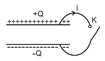
- ＋Q 판에서 -Q판 쪽으로 흐른다.
- -Q 판에서 ＋Q판 쪽으로 흐른다.
- 왼쪽에서 오른쪽으로 흐른다.
- 오른쪽에서 왼쪽으로 흐른다.
(정답률: 53%)

2. 변위전류에 의하여 전자파가 발생 되었을 때 전자파의 위상은?
- 변위전류보다 90° 빠르다.
- 변위전류보다 90° 늦다.
- 변위전류보다 30° 빠르다.
- 변위전류보다 30° 늦다.
(정답률: 60%)
3. 합성수지(ℇs=4) 중에서의 전자파의 속도는 몇[m/s]인가? (단, μs=1이다.)
- 1.5×107
- 1.5×108
- 3×107
- 3×108
(정답률: 61%)
4. 진공 내에서 전위함수가 V=x2＋y2과 같이 주어질 때 점 (2, 2, 0)[m]에서 체적전하밀도 ρ는 몇 [C/m2]인가? (단, ℇ0는 자유공간의 유전율이다.)
- -4ℇ0
- -2ℇ0
- 4ℇ0
- 2ℇ0
(정답률: 57%)
5. 극판의 면적이 4cm2, 정전용량이 1[pF]인 종이콘덴서를 만들려고 한다. 비유전율 2.5, 두께 0.01[㎜]의 종이를 사용하면 종이는 약 몇 장을 겹쳐야 되는가?
- 87장
- 100장
- 250장
- 886장
(정답률: 62%)
6. 다음 사항 중 옳지 않은 것은?
- 전계가 0이 아닌 곳에서는 전력선과 등전위면은 직교한다.
- 정전계는 정전에너지가 최소인 분포이다.
- 정전 대전 상태에서의 전하는 도체 표면에만 분포한다.
- 정전계 중에서 전계의 선적분은 적분 경로에 따라 다르다.
(정답률: 57%)
7. 자기인덕턴스 L[H]인 코일에 I[A]의 전류를 흘렸을 때 코일에 축적되는 에너지 W[J]와 전류 I[A] 사이의 관계를 그래프로 표시하면 어떤 모양이 되는가?
- 직선
- 원
- 포물선
- 타원
(정답률: 78%)
8. 평행판 콘덴서의 양극판에 ＋P, -P[C/m2]의 전하가 충전되어 있을 때, 이 두 전극 사이에 유전율 ℇ[F/m]인 유전체를 삽입한 경우의 전계의 세기는 몇 [V/m] 인가? (단, 유전체의 분극전하밀도를 ＋Pρ, -Pρ[C/m2]라 한다.)
- (P＋Pρ)/ℇ0
- (P-Pρ)/ℇ0
- (P/ℇ0)-(Pρ/ℇ)
- Pρ/ℇ0
(정답률: 67%)
9. 임의의 단면을 가진 2개의 원주상의 무한히 긴 평행도체가 있다. 지금 도체의 도전율을 무한대라고 하면 L, C, ℇ 및 μ 사이의 관계는? (단, C는 두 도체간의 단위 길이당 정전용량, L은 두 도체를 한 개의 왕복회로로 한 경우의 단위 길이 당 자기인덕턴스, ℇ은 두 도체사이에 있는 매질의 유전율, μ는 두 도체사이에 있는 매질의 투자율이다.)
- C/ℇ = L/μ
- 1/(LC) = ℇμ
- LC = ℇμ
- Cℇ = Lμ
(정답률: 67%)
10. 유전체 내의 전계의 세기 E와 분극의 세기 P와의 관계를 나타내는 식은? (단, ℇ0는 자유공간의 유전율이며, ℇs는 상대유전상수이다.)
- P = ℇ0(ℇs-1)E
- P = ℇ0ℇsE
- P = ℇs(ℇ0-1)E
- P = ℇ(ℇs-1)E
(정답률: 74%)
11. 그림과 같이 비투자율 1000 μr, 단면적 10[cm2], 길이 2[m]인 환상철심이 있을 때, 이 철심에 코일을 2, 000회 감아 0.5[A]의 전류를 흘릴 때의 철심 내 자속은 몇 [Wb] 인가?
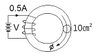
- 1.26×10-3
- 1.26×10-4
- 6.28×10-3
- 6.28×10-4
(정답률: 54%)
12. 자기모멘트 9.8×10-5[Wb·m]의 막대자석을 지구자계의 수평 성분 12.5[AT/m]의 곳에서 지자기 자오면으로부터 90º 회전시키는데 필요한 일은 약 몇 [J]인가?
- 1.23×10-3
- 1.03×10-5
- 9.23×10-3
- 9.03×10-5
(정답률: 70%)
13. 공기 중에 놓여진 직경 2[m]의 구도체에 줄 수 있는 최대 전하는 약 몇 [C]인가? (단, 공기의 절연내력은 3000[kV/m]이다.)
- 5×10-4
- 3.33×10-4
- 2.65×10-4
- 1.67×10-4
(정답률: 58%)
14. 비투자율 350인 환상철심 중의 평균 자계의 세기가 280[A/m]일 때 자화의 세기는 약 몇 [Wb/m2]인가?
- 0.12[Wb/m2]
- 0.15[Wb/m2]
- 0.18[Wb/m2]
- 0.21[Wb/m2]
(정답률: 67%)
15. 강자성체의 히스테리시스 루프의 면적은?
- 강자성체의 단위 체적당의 필요한 에너지이다.
- 강자성체의 단위 면적당의 필요한 에너지이다.
- 강자성체의 단위 길이당의 필요한 에너지이다.
- 강자성체의 전체 체적의 필요한 에너지이다.
(정답률: 63%)
16. 자기모멘트 M[Wb·m]인 막대자석이 평등자계 H[A/m] 내에 자계의 방향과 θ의 각도로 놓여 있을 때 이것에 작용하는 회전력 T[N·m/rad]는?
- MH cosθ
- MH sinθ
- MH tanθ
- MH cotθ
(정답률: 70%)
17. 옴의 법칙(Ohm's law)의 미분형태로 표시하면? (단, i는 전류밀도이고, ρ는 저항율, E는 전계이다.)
- i = (1/ρ)E
- i = ρE
- i = div E
- i = ▽E
(정답률: 63%)
18. 유전율 ℇ1, ℇ2인 두 유전체가 나란히 접하고 있고, 이 경계면에 나란히 유전체 ℇ1[F/m] 내에 거리 r[m]인 위치에 선전하 밀도 λ[c/m] 인 선상 전하가 있을 때, 이 선전하와 유전체 ℇ2 간의 단위길이당의 작용력은 몇 [N/m]인가?
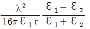
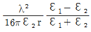
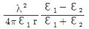
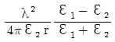
(정답률: 40%)
19. 정전계에서 도체의 성질을 설명한 것 중 옳지 않은 것은?
- 전하는 도체의 표면에서만 존재한다.
- 대전된 도체는 등전위면이다.
- 도체 내부의 전계는 0이다.
- 도체 표면상에서 전계의 방향은 모든 점에서 표면의 접선 방향이다.
(정답률: 57%)
20. “전자유도에 의하여 발생되는 기전력에서 우변에 (-)의 부호를 가진 것은 암페어의 오른나사 법칙에 의한 ( ㉠ )와(과) ( ㉡ )의 방향을 (＋)로 하고 있기 때문이다.” ( ㉠ ), ( ㉡ )에 알맞은 것은?
- ㉠ 전압, ㉡ 전류
- ㉠ 전압, ㉡ 자속
- ㉠ 전류, ㉡ 자속
- ㉠ 자속, ㉡ 인덕턴스
(정답률: 68%)
2과목: 전력공학
21. 1대의 주상변압기에 역률(늦음) cosθ1, 유효전력 P1[kW]의 부하와 역률(늦음) cosθ2, 유효전력 P2[kW]의 부하가 병렬로 접속되어 있을 경우 주상변압기에 걸리는 피상전력은 어떻게 나타내는가?
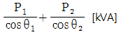
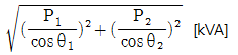
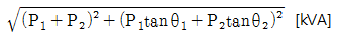
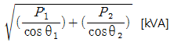
(정답률: 73%)
22. 3상 4선식 배전방식에서 1선 당의 최대전력은? (단, 상전압 : V, 선전류 : I라 한다.)
- 0.5VI
- 0.57VI
- 0.75VI
- 1.0VI
(정답률: 62%)
23. 수압철관의 안지름이 4[m]인 곳에서의 유속이 4[m/s]이었다. 안지름이 3.5[m]인 곳에서의 유속은 약 몇 [m/s]인가?
- 4.2m/s
- 5.2m/s
- 6.2m/s
- 7.2m/s
(정답률: 53%)
24. 154/22.9[kV], 40[MVA]인 3상 변압기의 %리액턴스가 14[%]라면 1차측으로 환산한 리액턴스는 약 몇 [Ω]인가?
- 5
- 18
- 83
- 560
(정답률: 50%)
25. 전력계통의 전압조정과 무관한 것은?
- 발전기의 조속기
- 발전기의 전압조정장치
- 전력용 콘덴서
- 전력용 분로리액터
(정답률: 55%)
26. 그림은 유입차단기(탱크형)의 구조도이다. A의 명칭은?
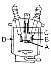
- 절연 liner
- 승강간
- 가동 접촉자
- 고정 접촉자
(정답률: 53%)
27. 3상 송전선로에서 선간단락이 발생 하였을 때 다음 중 옳은 것은?
- 정상전류와 역상전류가 흐른다.
- 정상전류, 역상전류 및 영상전류가 흐른다.
- 역상전류와 영상전류가 흐른다.
- 정상전류와 영상전류가 흐른다.
(정답률: 67%)
28. 환상선로의 단락 보호에 사용하는 계전방식은?
- 비율차동계전방식
- 방향거리계전방식
- 과전류계전방식
- 선택접지계전방식
(정답률: 63%)
29. 송전계통의 중성점 접지용 소호리액터의 인덕턴스 L은? (단, 선로 한 선의 대지정전용량 C라 한다.)
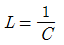
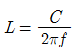
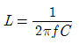
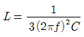
(정답률: 68%)
30. 직접 접지방식에 대한 설명으로 옳지 않은 것은?
- 변압기 절연이 낮아진다.
- 지락전류가 커진다.
- 지락고장시의 중성점 전위가 높다.
- 통신선의 유도장해가 크다.
(정답률: 53%)
31. 송전선로의 코로나 임계전압이 높아지는 경우가 아닌 것은?
- 상대 공기밀도가 적다.
- 전선의 반지름과 선간거리가 크다.
- 날씨가 맑다.
- 낡은 전선을 새 전선으로 교체하였다.
(정답률: 58%)
32. 루프(loop)배전방식에 대한 설명으로 옳은 것은?
- 전압강하가 적은 이점이 있다.
- 시설비가 적게 드는 반면에 전력손실이 크다.
- 부하밀도가 적은 농·어촌에 적당하다.
- 고장 시 정전범위가 넓은 결점이 있다.
(정답률: 55%)
33. 피뢰기의 충격방전 개시전압은 무엇으로 표시하는가?
- 직류전압의 크기
- 충격파의 평균치
- 충격파의 최대치
- 충격파의 실효치
(정답률: 70%)
34. 다음 중 부하전류의 차단 능력이 없는 것은?
- 단로기
- 가스차단기
- 유입개폐기
- 진공차단기
(정답률: 70%)
35. 역률 0.8(지상)의 2800[kW] 부하에 전력용 콘덴서를 병렬로 접속하여 합성역률을 0.9로 개선하고자 할 경우, 필요한 전력용 콘덴서의 용량은 약 몇 [kVA]인가?
- 372
- 558
- 744
- 1116
(정답률: 65%)
36. 파동 임피던스 Z1=500[Ω]인 선로의 종단에 파동 임피던스 Z2=1000[Ω]의 변압기가 접속되어 있다. 지금 선로에서 파고 eⅰ=600[kV]의 전압이 진입할 경우, 접속점에서의 전압의 반사파 파고는 몇 [kV]인가?
- 200
- 300
- 400
- 500
(정답률: 49%)
37. 단상 2선식 110[V] 저압 배전선로를 단상 3선식(110/220[V]으로 변경하였을 때 전선로의 전압 강하율은 변경 전에 비하여 어떻게 되는가? (단, 부하용량은 변경 전후에 같고 역률은 1.0 이며 평형부하이다.)
- 1/4로 된다.
- 1/3로 된다.
- 1/2로 된다.
- 변하지 않는다.
(정답률: 36%)
38. 어느 기력발전소에서 40000[kWh]를 발전하는데 발열량 860[kcal/㎏]의 석탄이 60톤 사용된다. 이 발전소의 열효율은 약 몇 [%]인가?
- 56.7%
- 66.7%
- 76.7%
- 86.7%
(정답률: 55%)
39. 송전선로의 페란티 효과에 관한 설명으로 옳지 않은 것은?
- 송전선로에 충전전류가 흐르면 수전단 전압이 송전단전압보다 높아지는 현상을 말한다.
- 페란티 효과를 방지하기 위하여 선로에 분로리액터를 설치한다.
- 장거리 송전선로에서 정전용량으로 인하여 발생한다.
- 페란티 현상을 방지하기 위해서는 진상 무효전력을 공급하여야 한다.
(정답률: 57%)
40. 기력발전소의 열사이클 중 재열 사이클에서 재열기로 가열하는 것은?
- 증기
- 공기
- 급수
- 석탄
(정답률: 72%)
3과목: 전기기기
41. 출력 300[kW], 전기자저항 0.0083[Ω]의 직류분권 발전기가 운전할 때 단자전압 250[V], 계자 전류는 14[A]이다. 전부하에서의 유기기전력은 약 몇[V]인가?
- 270
- 260
- 250
- 240
(정답률: 55%)
42. 직류발전기에서 회전속도가 빨라지면 정류가 힘든 이유는?
- 정류주기가 길어진다.
- 리액턴스 전압이 커진다.
- 브러시 접촉저항이 커진다.
- 정류자속이 감소한다.
(정답률: 56%)
43. 전슬롯수 24의 고정자에 단상 4극의 권선을 설치한 경우 인접한 슬롯 사이의 전기각은?
- 30º
- 60º
- 90º
- 120º
(정답률: 50%)
44. 교류 발전기의 동기 임피던스는 철심이 포화하면 어떻게 되는가?
- 증가한다.
- 관계없다.
- 감소한다.
- 증가, 감소가 불명확하다.
(정답률: 42%)
45. 3상 동기발전기의 매극, 매상의 슬롯수를 3 이라 하면 분포 계수는?
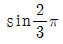
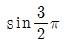
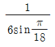
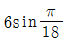
(정답률: 71%)
46. 광스위치, 릴레이, 카운터 회로 등에 사용되는 감광역저지 3단자 사이리스터는 어느 것인가?
- LAS
- SCS
- SSS
- LASCR
(정답률: 63%)
47. 동기전동기의 공급 전압에 대하여 앞선 전류의 전기자 반작용은?
- 증자작용
- 감자작용
- 교차 자화작용
- 소호리액터 작용
(정답률: 67%)
48. 수은 정류기에서 역호 현상의 큰 원인은?
- 과부하 전류
- 내부 잔존가스 압력의 저하
- 전원 주파수의 저하
- 내부 저항의 저하
(정답률: 47%)
49. 2차로 환산한 임피던스가 각각 0.03＋j0.02Ω, 0.02＋j0.03Ω인 단상변압기 2대를 병렬로 운전시킬 때 분담 전류는?
- 크기는 같으나 위상이 다르다.
- 크기와 위상이 같다
- 크기는 다르나 위상이 같다.
- 크기와 위상이 다르다.
(정답률: 71%)
50. 단상 유도전압 조정기에서 단락 권선의 역할은?
- 전압조정 용이
- 절연보호
- 철손 경감
- 전압강하 경감
(정답률: 46%)
51. 20[HP], 4극, 60[Hz]의 3상 유도 전동기가 있다. 전부하 슬립이 4[%]이다. 전부하시의 토크 [㎏·m]는 약 얼마인가? (단, 1[HP]은 746[W]이다.)
- 11.41
- 10.41
- 9.41
- 8.41
(정답률: 59%)
52. 15[kW] 3상 유도 전동기의 기계손이350[W], 전부하시의 슬립이 3[%]이다. 전부하시의 2차 동손은 약 몇[W]인가?
- 523
- 475
- 411
- 365
(정답률: 60%)
53. 60[Hz], 4극, 3상 권선형 유도 전동기의 회전자가 슬립 0.1로 회전할 때 회전자 주파수는 몇 [Hz]인가?
- 6
- 54
- 60
- 600
(정답률: 53%)
54. 단상 직권전동기의 종류가 아닌 것은?
- 직권형
- 아트킨손형
- 보상직권형
- 유도보상직권형
(정답률: 68%)
55. 정격용량 10000[kVA], 정격전압 6000[V], 극수 12, 주파수 60[Hz], 1상의 동기임피던스 2[Ω]인 3상 동기 발전기가 있다. 이 발전기의 단락비는 얼마인가?
- 1.0
- 1.2
- 1.4
- 1.8
(정답률: 50%)
56. 정격 3300/220[V]의 변압기의 1차에 3300[V]를 가하고 2차에 부하를 접속하니 1차에 3[A]의 전류가 흘렀다. 2차 출력 [kVA]은 약 얼마인가?
- 2.5
- 4.9
- 9.9
- 19.8
(정답률: 58%)
57. 변압기의 이상적인 병렬 운전에 대한 설명이 아닌 것은?
- 각 변압기가 그 용량에 비례하여 전류를 분담한다.
- 각 변압기의 자화 전류는 정현파가 된다.
- 병렬로 된 각 변압기 폐회로에는 순환 전류가 흐르지 않는다.
- 각 변압기에 대한 전류의 대수합이 언제나 전체의 부하 전류와 같다.
(정답률: 42%)
58. 직류기의 전기자에 사용되는 권선법 중 가장 많이 사용하는 것은?
- 단층권
- 2층권
- 환상권
- 개로권
(정답률: 66%)
59. 기전력에 고조파를 포함하고 중성점이 접지되어 있을 때에는 선로에 제3고조파를 주로 하는 충전전류가 흐르고 변압기에서 제3고조파의 영향으로 통신 장해를 일으키는 3상 결선법은?
- △ - △결선
- Y - Y 결선
- Y - △결선
- △ - Y 결선
(정답률: 66%)
60. 동기 발전기 전기자 권선의 층간 단락 보호 계전기로 가장 적합한 것은?
- 온도 계전기
- 접지 계전기
- 차동 계전기
- 과부하 계전기
(정답률: 66%)
4과목: 회로이론 및 제어공학
61. 회로를 테브난(Thevenin)의 등가회로로 변환하려고 한다. 이때 테브난의 등가저항 [Ω] RT와 등가전압 [V]VT는?
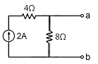
- RT=8/3, VT=8
- RT=6, VT=12
- RT=8, VT=16
- RT=8/3, VT=16
(정답률: 52%)
62. 5[mH]인 두 개의 자기 인덕턴스가 있다. 결합 계수를 0.2로부터 0.8까지 변화시킬 수 있다면 이것을 접속하여 얻을 수 있는 합성 인덕턴스의 최대값과 최소값은 각각 몇 [mH]인가?
- 20, 8
- 20, 2
- 18, 8
- 18, 2
(정답률: 56%)
63. 4단자 회로에서 4단자 정수를 A, B, C, D라 하면 영상 임피던스 Z01/Z02는?
- D/A
- B/C
- C/B
- A/D
(정답률: 66%)
64. 한 상의 임피던스가 6＋j8[Ω]인 △부하에 대칭선간 전압 200[V]를 인가할 경우의 3상 전력은 몇 [W]인가?
- 2,400
- 4,157
- 7,200
- 12,470
(정답률: 57%)
65. 전압 대칭분을 각각 V0, V1, V2 전류의 대칭분을 각각 I0, I1, I2라 할 때 대칭분으로 표시되는 전전력은 얼마인가?
- V0I1＋V1I2＋V2I0
- V0I0＋V1I1＋V2I2
- 3V0I1＋3V1I2＋3V2I0
- 3V0I0＋3V1I1＋3V2I2
(정답률: 46%)
66. 그림과 같은 회로의 전압비 전달함수 V2(s)/V1(s)는?
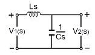
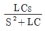
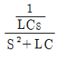
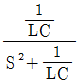
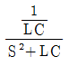
(정답률: 57%)
67. 전송선로에서 무손실일 때 L=96[mH], C=0.6[μF]이면, 특성 임피던스는 몇 [Ω] 인가?
- 100
- 200
- 300
- 400
(정답률: 66%)
68. 회로에서 스위치 K는 닫혀진 상태에 있었다. t=0에서 K를 열었을 때 다음의 서술 중 잘못된 것은?
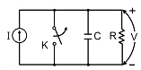
- t≥0에 대한 회로 방정식은
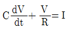
이다. 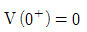
이다.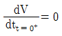
이다.- V의 정상값
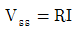
이다.
(정답률: 43%)
69. 개루프 전달함수가 다음과 같을 때 폐루프 전달함수는?
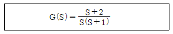
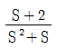
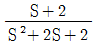
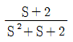
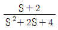
(정답률: 60%)
70. 3상 교류대칭 전압에 포함되는 고조파 중에서 상회전이 기본파에 대하여 반대되는 것은?
- 제3고조파
- 제5고조파
- 제7고조파
- 제9고조파
(정답률: 57%)
71. 그림과 같은 회로는 어떤 논리회로 인가?
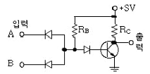
- AND 회로
- NAND 회로
- OR 회로
- NOR 회로
(정답률: 44%)
72. 71. G(jω)=j0.1ω에서 w=0.01[rad/sec]일 때 계의 이득 [dB]은 얼마인가?
- -100
- -80
- -60
- -40
(정답률: 57%)
73. 다음 요소 중 피드백(feed back)제어계의 제어장치에 속하지 않는 것은?
- 설정부
- 제어요소
- 검출부
- 제어대상
(정답률: 35%)
74. PID 동작은 어느 것인가?
- 사이클링과 오프셋이 제거되고 응답 속도가 빠르며 안정성도 있다.
- 응답 속도를 빨리 할 수 있으나 오프셋은 제거되지 않는다.
- 오프셋은 제거되나 제어동작에 큰 부동작 시간이 있으면 응답이 늦어진다.
- 사이클링을 제거할 수 있으나 오프셋이 생긴다.
(정답률: 60%)
75. 블록 다이어그램에서 θ(s)/R(s)의 전담함수는?
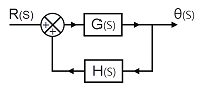
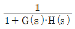
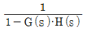
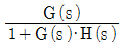
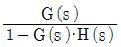
(정답률: 62%)
76. 다음과 같은 상태 방정식으로 표현되는 제어계에 대한 서술 중 바르지 못한 것은?
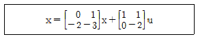
- 이 제어계는 2차 제어계이다.
- 이 제어계는 부족 제동된 상태이다.
- x는 2×1의 계위를 갖는다.
- (s＋1)(s＋2)이 특성방정식이다.
(정답률: 56%)
77. 샘플러의 주기를 T라 할 때 s평면상의 모든 점은 식 z=est에 의하여 z 평면상에 사상된다. s 평면의 좌반 평면상의 모든 점은 z 평면상 단위원의 어느 부분으로 사상되는가?
- 내점
- 외점
- 원주상의 점
- z 평면전체
(정답률: 69%)
78. f(t)=e-at의 z변환은?
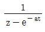
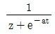
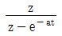
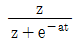
(정답률: 56%)
79. 특성 방정식이 s4＋s3＋3s2＋Ks＋2=0인 제어계가 안정하기 위한 K의 범위는?
- 0＜K＜3
- 2＜K＜3
- 1＜K＜2
- 3＜K
(정답률: 37%)
80. 특성 방정식 s5＋2s4＋2s3＋3s2＋4s＋1을 Routh-Hurwitz 판별법으로 분석한 결과이다. 옳은 것은?
- s 평면의 우반면에 근이 존재하지 않기 때문에 안정한 시스템이다.
- s 평면의 우반면에 근이 1개 존재하기 때문에 불안정한 시스템이다.
- s 평면의 우반면에 근이 2개 존재하기 때문에 불안정한 시스템이다.
- s 평면의 우반면에 근이 3개 존재하기 때문에 불안정한 시스템이다.
(정답률: 62%)
5과목: 전기설비기술기준 및 판단기준
81. 사용전압이 35000[V]이하인 특별고압가공전선과 가공약전류 전선을 동일 지지물에 시설하는 경우 특별고압 가공전선로의 보안공사로 알맞은 것은?
- 고압 보안공사
- 제1종 특별고압 보안공사
- 제2종 특별고압 보안공사
- 제3종 특별고압 보안공사
(정답률: 54%)
82. 사용전압이 170000[V] 이하인 특별 고압가공 전선로를 시가지에 시설하는 경우, 지지물로 사용하는 것이 아닌 것은?
- 목주
- 철탑
- 철근콘크리트주
- 철주
(정답률: 64%)
83. 점멸장치와 타임스위치 등의 시설과 관련하여 다음 ( )에 알맞은 것은?(관련 규정 개정전 문제로 여기서는 기존 정답인 2번을 누르면 정답 처리됩니다. 자세한 내용은 해설을 참고하세요.)
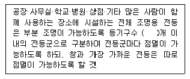
- 4
- 6
- 8
- 10
(정답률: 53%)
84. 사람이 상시 통행하는 터널안의 교류 220[V]의 배선을 애자 사용공사에 의하여 시설 할 경우 전선은 노면상 몇 [m] 이상의 높이로 시설하여야 하는가?
- 2.0m
- 2.5m
- 3.0m
- 3.5m
(정답률: 51%)
85. 방전등용 변압기의 2차 단락전류나 관등회로의 동작전류가 몇[mA] 이하인 방전등을 시설하는 경우 방전등용 안정기의 외함 및 방전등용 전등기구의 금속제 부분에 옥 방전등공사의 접지공사를 하지 않아도 되는가? (단, 방전등용 안정기를 외함에 넣고 또한 그 외함과 방전등용 안정기를 넣을 방전등용 전등기구를 전기적으로 접속하지 않도록 시설한다고 한다.)
- 25mA
- 50mA
- 75mA
- 100mA
(정답률: 42%)
86. 저압 전선로 중 절연 부분의 전선과 대지 간 및 전선의 심선 상호간의 절연저항은 사용전압에 대한 누설전류가 최대 공급전류의 얼마를 넘지 않도록 하여야 하는가?
- 1/4000
- 1/3000
- 1/2000
- 1/1000
(정답률: 67%)
87. 가공전선로의 지지물에 사용하는 지선의 시설과 관련하여 다음 중 옳지 않은 것은?
- 지선은 안전율은 2.5 이상, 허용 인정하중의 최저는 3.31[kN]으로 할 것
- 지선에 연선을 사용하는 경우 소선(素線) 3가닥 이상의 연선일 것
- 지선에 연선을 사용하는 경우 소선의 지름이 2.6[㎜] 이상의 금속선을 사용한 것일 것
- 가공전선로의 지지물로 사용하는 철탑은 지선을 사용하여 그 강도를 분담시키지 않을 것
(정답률: 59%)
88. 400[V] 미만인 저압용 전동기의 외함을 접지 공사할 때 접지선(연동선)의 최소 지름 [mm]과 최대 접지저항 [Ω]은?(오류 신고가 접수된 문제입니다. 반드시 정답과 해설을 확인하시기 바랍니다.)
- 6[mm], 100[Ω]
- 4[mm], 10[Ω]
- 2.5[mm], 100[Ω]
- 1.5[mm], 10[Ω]
(정답률: 50%)
89. 345[kV] 가공송전선로를 평지에 건설하는 경우 전선의 지표상 높이는 최소 몇 [m] 이상이어야 하는가?
- 7.58
- 7.95
- 8.28
- 8.85
(정답률: 62%)
90. 최대사용전압이 1차 22000[V], 2차6600[V]의 권선으로서 중성점 비접지식 전로에 접속하는 변압기 특별 고압측 절연내력 시험전압은 몇 [V] 인가?
- 24000
- 27500
- 33000
- 44000
(정답률: 62%)
91. 어느 공장에서 440[V] 전동기 배선을 사람이 닿을 우려가 있는 곳에 금속관으로 시공하고자 한다. 이 금속관을 접지할 때 그 저항값은 몇 [Ω] 이하로 하여야 하는가?(오류 신고가 접수된 문제입니다. 반드시 정답과 해설을 확인하시기 바랍니다.)
- 10Ω
- 30Ω
- 50Ω
- 100Ω
(정답률: 50%)
92. 가공전선로에 사용하는 지지물의 강도계산에 적용하는 풍압하중의 종별로 알맞은 것은?
- 갑종, 을종, 병종
- A종, B종, C종
- 1종, 2종, 3종
- 수평, 수직, 각도
(정답률: 63%)
93. 옥내에 시설하는 관등회로의 사용전압이 1000V를 넘는 방전관에 네온 방전관을 사용하고, 관등회로의 배선은 애자사용 공사에 의하여 시설할 경우 다음 설명 중 옳지 않은 것은?
- 전선은 네온 전선일 것
- 전선 상호간의 간격은 6㎝ 이상일 것
- 전선의 지지점간의 거리는 1m 이하일 것
- 전선은 조영재의 앞면 또는 위쪽면에 붙일 것
(정답률: 41%)
94. 고압 가공선로의 지지물에 대한 경간의 제한 기준으로 옳지 않은 것은?
- A종 철주를 사용하는 경우 최대 경간은 150m이다.
- 철탑을 사용하는 경우 최대 경간은 600m이다.
- 경간이 100m를 넘는 경우는 지름 4.5㎜ 이상의 동복강선을 고압 가공전선으로 사용한다.
- 고압 가공전선로의 전선으로 단면적 22mm2 이상의 경동연선을 사용하는 경우 A종 철주의 경간은 300m 이하이어야 한다.
(정답률: 37%)
95. “저압전로에서 그 전로에 지락이 생겼을 경우에 ( ㉠ )초 이내에 자동적으로 전로를 차단하는 장치를 시설하는 경우 제3종 접지공사와 특별 제3종 접지공사의 접지 저항치는 자동 차단기의 ( ㉡ )에 따라 달라진다.“ ( ㉠ ), ( ㉡ )에 알맞은 것은?(오류 신고가 접수된 문제입니다. 반드시 정답과 해설을 확인하시기 바랍니다.)
- ㉠ 0.5, ㉡ 정격차단속도
- ㉠ 0.5, ㉡ 정격감도전류
- ㉠ 1.0, ㉡ 정격차단속도
- ㉠ 1.0, ㉡ 정격감도전류
(정답률: 44%)
96. 발연선을 도로, 주차장 또는 조영물의 조영재에 고정시켜 시설하는 경우, 발연선에 전기를 공급하는 전로의 대지전압은 몇 [V] 이하이어야 하는가?
- 220
- 300
- 380
- 600
(정답률: 70%)
97. 내부에 고장이 생긴 경우에 자동적으로 이를 전로로부터 차단하는 장치를 설치하여야 하는 조상기(調相機) 뱅크 용량은 몇 [kVA] 이상인가?
- 3000
- 5000
- 10000
- 15000
(정답률: 60%)
98. 직류 전기 철도용 급전선과 가공 직류 전차선을 접속하는 전선을 매어다는 금속선은 그 전선으로부터 애자로 절연하고 또한 이에 실시하는 접지공사로 알맞은 것은?(오류 신고가 접수된 문제입니다. 반드시 정답과 해설을 확인하시기 바랍니다.)
- 제1종 접지공사
- 제2종 접지공사
- 제3종 접지공사
- 특별 제3종 접지공사
(정답률: 44%)
99. 스러스트 베어링의 온도가 현저히 상승하는 경우 자동적으로 이를 전로로부터 차단하는 장치를 시설하여야 하는 수차 발전기의 용량은 몇 [kVA] 이상인가?
- 500
- 1000
- 1500
- 2000
(정답률: 36%)
100. 66000[V] 송전선로의 송전선과 수목과 의 이격거리는 최소 몇 [m] 이상이어야 하는가?
- 2.0m
- 2.12m
- 2.24m
- 2.36m
(정답률: 45%)